Computed tomography resolves internal anatomy through cross-sectional X-ray images. Here, the 2D collection represents individual slices.

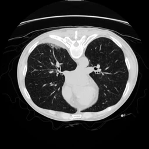
One token interface across medical imaging
dimensions, modalities, and tasks.
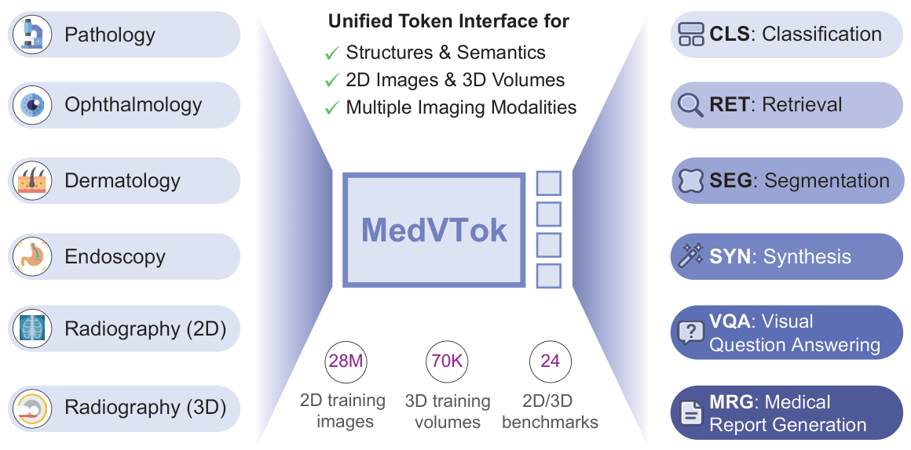
Understanding a patient's health requires connecting evidence across organs, biological scales, and time. Images provide rich evidence of anatomy and disease, but each modality reveals only part of it: histopathology captures cellular and tissue morphology, while CT and MRI reveal organ-scale structure. Making this evidence reusable is a foundational step toward medical AI that can reason about the person as a whole.
That begins with how images are encoded. Medical imaging spans diverse acquisition processes and both 2D images and 3D volumes, yet visual tokenizers often serve only a particular modality or dimension. These fragmented representations leave downstream models to learn much of the modality adaptation themselves. A shared visual interface can move this burden into a reusable foundation, giving different tasks a consistent way to access imaging evidence.
MedVTok builds one token interface across imaging modalities, for both 2D images and 3D volumes. Its central goal is to encode low-level spatial information of anatomy and local detail alongside high-level clinical semantics, including the distinctive information each modality contributes. This is the visual foundation we develop toward whole-person modeling.
> 28M images
9,256,955 images · 32.2%
5,648,763 images · 19.6%
3,786,062 images · 13.2%
3,050,081 images · 10.6%
2,861,915 images · 9.9%
1,590,895 images · 5.5%
1,255,155 images · 4.4%
1,001,874 images · 3.5%
317,802 images · 1.1%
Computed tomography resolves internal anatomy through cross-sectional X-ray images. Here, the 2D collection represents individual slices.

Microscopy of prepared tissue reveals cellular morphology and tissue architecture. The tokenizer represents these fine textures alongside larger-scale anatomy.
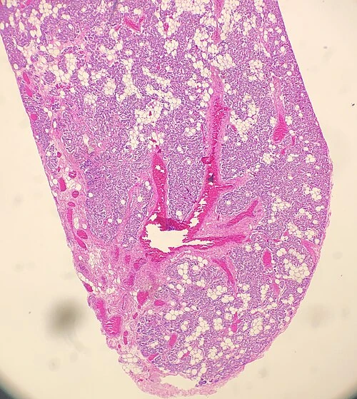
Magnetic resonance imaging provides rich soft-tissue contrast. Individual slices capture anatomical structures with a range of acquisition sequences and contrasts.
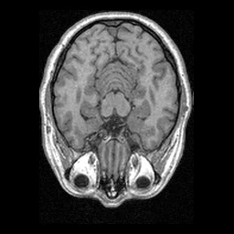
Fundus photography records the retinal surface, including the optic disc, macula, and blood vessels, in a single color image.
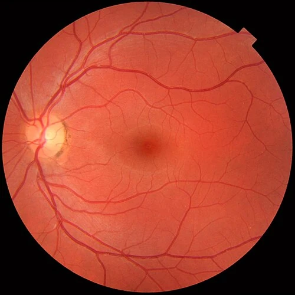
A camera inside the body records the surface of organs and cavities. These images capture mucosal texture, folds, and local lesions.
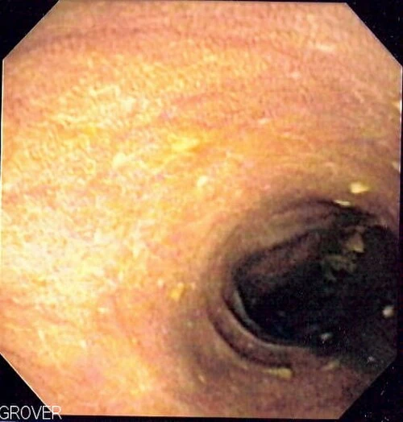
Projection radiography compresses three-dimensional anatomy into a two-dimensional image. Bones and chest structures appear through differences in X-ray attenuation.
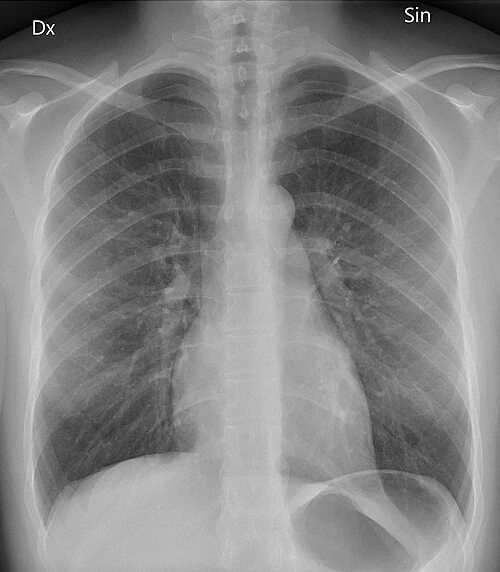
Magnified skin imaging reveals pigment patterns and surface structures that are difficult to see with the unaided eye.
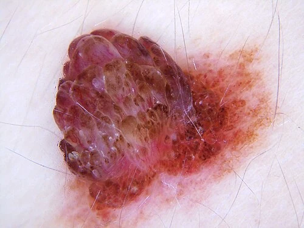
Reflected sound waves reveal soft-tissue boundaries and internal organ structure. Characteristic speckle and acoustic shadows distinguish this modality.
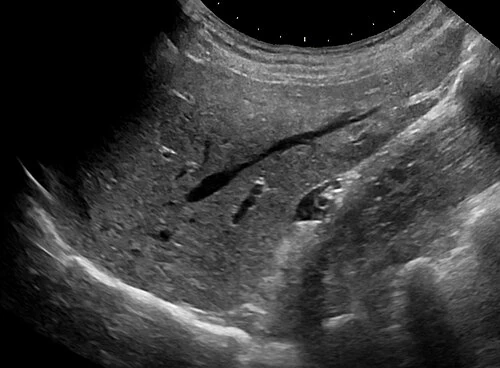
Optical coherence tomography uses light to resolve fine cross-sectional tissue layers, including the layered structure of the retina.
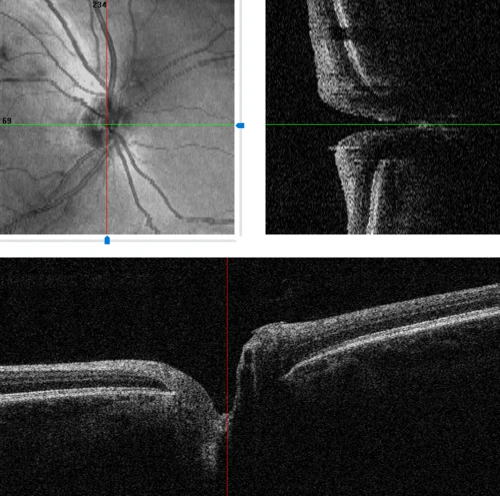
35,257 volumes · 50.3%
34,887 volumes · 49.7%
A CT volume preserves anatomy across a stack of X-ray slices. Native 3D tokenization captures spatial relationships between slices, beyond an isolated cross-section.
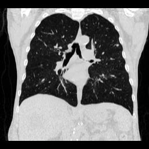
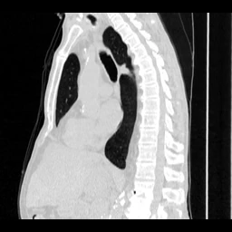
An MRI volume preserves soft-tissue anatomy across three spatial dimensions. Native 3D tokens represent the volume as one input while retaining relationships between neighboring slices.
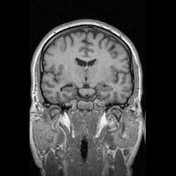
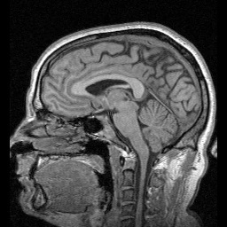
Different tasks need different information from the same image, so a shared tokenizer must retain both anatomical detail and the clinical cues each modality reveals. Spatially, organs and lesions extend across slices, so local image fidelity alone can miss their continuity. Semantically, modalities can describe related clinical concepts through different evidence. Unifying their representations requires retaining the distinctions that make each modality informative.
MedVTok learns low-level spatial fidelity and high-level clinical semantics within one representation. Reconstruction anchors the tokens in the observed image or volume, with SliDR extending supervision to anatomical continuity. MERA integrates semantic knowledge across modalities while preserving complementary information. Together, these levels of supervision connect the spatial evidence in an image to the clinical meaning that makes it useful across tasks.
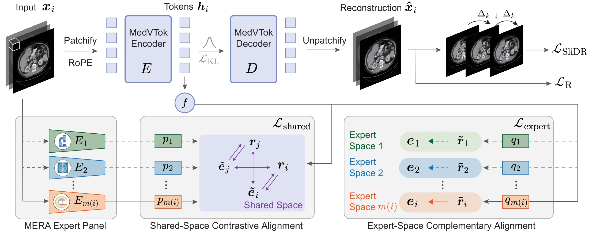
SliDR supervises how anatomy changes between adjacent slices, helping reconstructed volumes retain the continuity of the input alongside local image detail.
MERA brings knowledge from modality-specialized encoders into a shared space, while preserving complementary information in their native spaces so that unification retains each modality’s distinctive clinical cues.
We keep MedVTok frozen and evaluate its representations on nearest-neighbor classification and retrieval, linear segmentation, image synthesis, visual question answering, and 3D report generation.
Fundus-MMBench
MM-Skin
Kvasir-VQA-x1
PathVQA
SLAKE
GMAI-MMBench
MedVAE uses its 3D variant for report generation.
VQA and report generation use LLaVA-Med and LaMed with frozen MedVTok tokens.
E1–E6 introduce semantic alignment, mean pooling, and more data during 2D pretraining. E7 adds 3D volumes; E8 adds slice differential regularization during joint 2D/3D training.
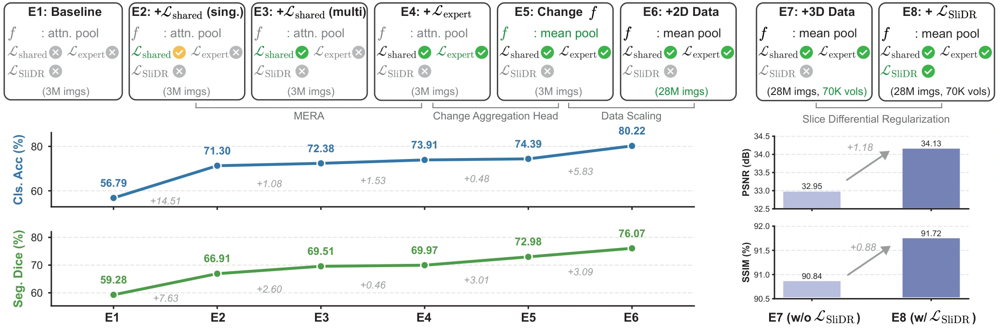
Encode visual tokens or reconstruct inputs with the same model.
import torch
from PIL import Image
from models.medvtok import build_model, build_transform
device = "cuda" if torch.cuda.is_available() else "cpu"
model = build_model(
arch="medvtok-clip-meanpool",
pretrained_path="weights/ckpt.pth", device=device,
).eval()
transform = build_transform(image_shape=(256, 256))
image = transform(Image.open("data/vis_imgs/sample00.png").convert("RGB"))
with torch.inference_mode():
outputs = model([image.to(device)], sample_posterior=False,
decode=True, return_batched_tensor=False)
features = outputs["feats"]
tokens = outputs["patch_tokens"]
reconstruction = outputs["recons"][0]
@inproceedings{ma2026medvtok,
title = {MedVTok: A General-Purpose Medical Visual Tokenizer},
author = {Ma, Chenglong and Ji, Yuanfeng and Ning, Junzhi and Liu, Jiyao and Wei, Yujie and Rui, Shaohao and Zhang, Chaoyang and Li, Wenjie and Tang, Wenhao and Tang, Cheng and Li, Wei and Gao, Shujian and Zhang, Yujie and Chen, Ying and Li, Zilong and Ge, Zongyuan and Song, Diping and Ye, Jin and Hu, Ming and He, Junjun and Shan, Hongming},
booktitle = {Advances in Neural Information Processing Systems (NeurIPS)},
year = {2026}
}